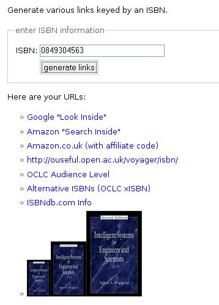

It's amazing what you can do with ISBN numbers, isn't it?
For example, I've just posted a link generator at ./ISBNLinks.html
which pulls together some of the 'ISBN as a URL argument' links I've found over the last few months.

The list includes links to Amazon (book pages and 'search inside' pages), Google books, OCLC xISBN and reader level services, ISBNdb book info, the OU library catalogue (of course;-) as well as book covers from Amazon (err, I think I break the regs on these - I suspect the images should link to the corresponding sales page on Amazon...)
Posted by ajh59 at April 18, 2006 10:09 PMNice! How about adding open worldcat? I really like this one because it can find books at nearby libraries. http://www.oclc.org/worldcat/open/isbnissnlinking/default.htm
Posted by: todd at April 19, 2006 02:58 PM"How about adding open worldcat?"
Done...in a couple of flavours, too (e.g. with the details and editions tab highlighted). I also add the bookcover from Open WorldCat.
Are there any more I should add to the list? :-)
Posted by: Tony Hirst at April 20, 2006 12:54 AM